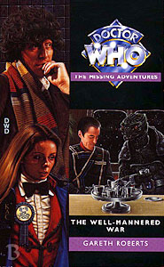

|
The Well-Mannered War
|
BASIC PLOT DOCTOR COMPANIONS MATERIALISATION CIRCUIT PREPARATORY READING CONTINUITY REFERENCES Pg 16 "Romana looked down at her new outfit. She had chosen a red velvet smoking jacket and a frilled shirt with a bow tie, which she had found discarded on a hanger in the wardrobe room." Romana is dressed as the third Doctor. See also Continuity Cock-Ups. Pg 21 "The central column was rising and falling noisily but smoothly enough." The Doctor notes that the column is being more noisy than usual in Logopolis. Pg 25 "We don't want you regenerating again, do we?" Destiny of the Daleks (in which Romana regenerated for no reason) and Time and the Rani (in which the Doctor regenerated because the console room, as on this occasion, took a bit of a buffeting; thus, for no reason). Pgs 25-26 "Right at the end of the Humanian era. After the destruction of Earth" The Telemovie gives us the former. The Ark and The End of the World give us the latter. Pg 26 "'Not a word to the High Council when you get back to Gallifrey.' Romana bristled. 'Who said anything about going back?'" She gets the call to do so in Meglos. Pg 63 Viddeas is attacked and consumed by a photocopier. This is remarkably similar to something that Russell T Davies would write; think Adipose. No wonder he hired Roberts. Pg 82 "The lettering was angular and jagged, the notation reminding him of trips to the Orient on Earth" Marco Polo and probably others. Pg 87 "Remote Tellurian colony, sited in the Fostrix galaxy, settled in the fifty-eighth segment of time." Tellurian was Eric Saward's word for humans, first used in The Visitation. The Ark occurred in the fifty-seventh segment of time. Pg 95 "She considered using the sonic screwdriver to pick the lock of the cell." We saw Romana's sonic device in The Horns of Nimon. Pg 96 "She and the Doctor had encountered him not so long ago in their own relative time-stream, during an encounter with the villainous Xais in the twenty-third century." The Romance of Crime. Gloriously, this continuity reference is actually given a footnote, pointing the diligent reader in the right direction to catch up on the back-story. Can you imagine if they did this every time there was a continuity reference? The Quantum Archangel would be nearly three times its current length. For which no one would be thanked. Pg 97 Reference to Spiggot, again from The Romance of Crime. Pg 98 Menlove Stokes ends up at the end of the universe: "It's a beautiful place. A utopia." Hmmm: a utopia at the end of the universe which seems wonderful. That sounds familiar. (If in doubt, see Utopia.) Pg 122 "I'm an old hand with webs." The Web Planet, The Web of Fear, Planet of the Spiders. Pg 124 "Stokes made a fist and slammed it against the wall, which wobbled." Almost as if this was made at the end of Season 17, when there was no money left. Pg 130 "My men and I claim descent from the lines of Nazmir and Talifar." The former is used as a kind of swear word or oath in The Highest Science. Pg 131 "He threatened you with the Web? Stupid boy." This is a (rather silly) reference to Dad's Army, which was itself referenced in No Future. Pg 140 "She dismissed the thought, as she dismissed all thoughts of returning home nowadays." Again, predicting what would happen in Meglos. There's another reference to the Humanian era from the Telemovie on this page as well. Pg 142 "But Gallifrey is gone." This story is set in the far future, and Virgin postulated that Gallifrey was in the far past. It might make sense that the reason the far future is prohibited to Time Lords (as in Frontios) is precisely because Gallifrey is gone. It would also be quite nice to tie this into the Time War and to note that, once that's happened in the new series, the Doctor frequently heads this far into the future. "It well remembered its attempts to sneak into the wastes of the vortex, all of them thwarted by the defences erected by those miserable, thin-blooded, infertile, self-crowned gods, the Time Lords." All pretty fair. The reference to them being infertile is from Cat's Cradle: Time's Crucible and Lungbarrow, and is kind of contradicted in Cold Fusion. Pg 168 "The last time we met, as I recall, he brought precious little peace." The Romance of Crime. Pg 169 "He pulled out a pamphlet and started to read. Its title was So You're Caught in a Rocket Attack." A homage to probably the silliest bit (against some stiff competition) in Destiny of the Daleks. Pg 170 "Our boys on Barclow are risking their lives to save all of ours, to protect a way of life that allows Mr K9 to pontificate in his unusual manner." The use of a war to win an election was probably, at the time of writing, a reference to the Falklands, but is horribly prescient of the Iraq War. Pg 186 "'It started off as a protest.' 'Most things do.'" The Doctor's departure from Gallifrey, as seen in Lungbarrow. Pg 187 "'What time do you make it?' 'Er, about ten billion AD.'" This fits almost precisely with the timelines in the new series, especially The End of the World. Pg 195 "We fled the Time Fleets." Sounds like the Time War. Pg 236 "Retrieve data from our last encounter with Mr Stokes, on the Rock of Judgement." The Romance of Crime. Pg 252 "Like trying to close the Eye with a finklegruber." The Eye of Harmony from The Deadly Assassin et al. A finklegruber was mentioned in The Invasion of Time. Pg 259 "Until his hand closed around an oddly shaped chunk of clear crystal." Stokes' means of communication with the Black Guardian resembles Turlough's in Mawdryn Undead etc. Pg 260 "History hangs in the balance out here, remember?" The Doctor and Romana have travelled further forward in time than they should have done, as in Frontios. Pg 267 "Heat death would lead to levels of chaos and decay imperceptible to the lived experience of any creature, however long-lived." Predicts Logopolis. Pg 272 "Professor of Applied Arts at St Oscar's University, planet Dellah." This is how the MAs tied into the Bernice NAs, as Stokes ends up in them. Pg 277 The chapter title is "The Official End of It All", which is a reference to the fact that this is the final MA and the last book to be published by Virgin. Pg 281 "The voice had delivered what it had promised: a lengthy, untroubled early retirement, thanks to a convenient time storm that had whipped him and his men here from their rightful place thousands of years before." Dragonfire and The Curse of Fenric. Pg 282 "Doors are an irrelevance to some people." A vague reference to The Ribos Operation. Pg 284 "The Key to Time. The same substance." The Ribos Operation through The Armaggedon Factor. Pg 288 "I was at your side when you fought the wizard of Avalon, when you united the Rhumon and the Menoptera against the Animus, when you brought down Lady Ruath and her vampire hordes and when you fought the Timewyrm on the surface of the moon." Probably Battlefield, The Web Planet, Goth Opera (thus linking to the first MA) and Blood Harvest and, finally, Timewyrm: Revelation (thus linking to the series that opened the NAs). Pg 292 "'The emergency unit,' she exclaimed. 'You won't use that.'" The Mind Robber. Pg 293 "Once I ended up in the fictional realm. I suppose it wasn't such a bad place." The Mind Robber again. "The lighting returned to normal. It could have been another ordinary day in the TARDIS, ready to begin another adventure." Lovely. Final reference to Daleks, Cybermen and Sontarans. OLD FRIENDS AND OLD ENEMIES The Black Guardian from The Armageddon Factor, who'll also pop up again later. In the audio version, he's played by David Troughton, which is another continuity reference, albeit of a rather different type. NEW FRIENDS AND NEW ENEMIES The Femdroids: Galatea.
CONTINUITY COCK-UPS PLUGGING THE HOLES [Fan-wank theorizing of how to fix continuity cock-ups] FEATURED ALIEN RACES The Femdroids, who aren't technically alien, but kind of qualify. They're based on K9, but are somewhat sexier, unless you have a metal dog fetish. The Darkness, a composite being made of evolved flies, who meander through space looking for feeding grounds. They are not particularly pleasant. FEATURED LOCATIONS The (rather pretty) planet Metralubit (which is also a lie). It's in the Metra System and its capital city is Metron (which is not desperately imaginative). The Time Spiral (pretty dangerous). The (not at all pretty) interior of the Darkness (which is unpleasant). Briefly, Dellah, 2593 (which is pretty wet). IN SUMMARY - Anthony Wilson |
|
 |